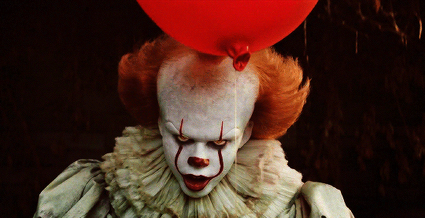

Сти́вен Э́двин Кинг (англ. Stephen Edwin King; род. 21 сентября 1947, Портленд, Мэн, США) — американский писатель, работающий в разнообразных жанрах, включая ужасы, триллер, фантастику, фэнтези, мистику, драму; получил прозвище «Король ужасов».
Он написал около 200 рассказов, большинство из которых были собраны в девять авторских сборников. Действие многих произведений Кинга происходит в его родном штате Мэн.
Факты о писателе:
● Книга Кинга «Ярость» была изъята из продажи. Когда в Канзасе стали происходить реальные случаи стрельбы в школе, у малолетнего преступника, убившего троих своих одноклассников, нашли издание этой книги, после чего сам автор решил изъять книгу из продажи.
● Стивен Кинг является создателем вымышленного города Кастл Рок.
● Владеет тремя радиостанциями в штате Мэн.
● Стивен Кинг - высокий (1.93 м) голубоглазый человек в очках с черными волосами с проседью. Иногда он отращивает бороду и усы. Практически всегда одевается весьма демократично - носит джинсы и простую рубашку. Кинг обожает рок музыку и бейсбол - в свое время Стивен даже приобрел две специализированные радиостанции Бангора. Первая из них - ВЗОН, занимается спортивными трансляциями. Вторая - ВКИТ, позиционирует себя как рок-радиостанцию Бангора. Кинг сам довольно хорошо играет на гитаре и выступает в составе любительской группы "Рок Боттом Ремайндерс", состоящей из писателей и литературных критиков. Быть может, они не очень хорошо владеют инструментами, но зато поют и играют от души.
● Кинг лечился от алкогольной и кокаиновой зависимости.
● Кинг не пользуется мобильным телефоном. Возможно, причины этого раскрываются в романе «Мобильник» (2006).
Когда в городке Дерри, штат Мэн, начинают пропадать дети, несколько ребят сталкиваются со своими величайшими страхами и вынуждены помериться силами со злобным клоуном Пеннивайзом, чьи проявления жестокости и список жертв уходят в глубь веков.

Единственный способ жить — это жить. Говорить себе: «Я могу это сделать», — даже зная, что не можешь.
Планета вращается, знаете ли. Можно вращаться вместе с ней, а можно зацепиться за что-то и протестовать, но тогда тебя свалит с ног.
У каждого есть что-то вроде навозной лопаты, которой в моменты стрессов и неприятностей вы начинаете копаться в себе, в своих мыслях и чувствах. Избавьтесь от нее. Сожгите ее. Иначе вырытая вами яма достигнет глубин подсознания, и тогда по ночам из нее будут выходить мертвецы.
@StivenKing
Похожие авторы
Другие фильмы по книгам этого автора
Присоединяйтесь и следите за новинками любимых авторов!